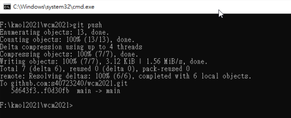
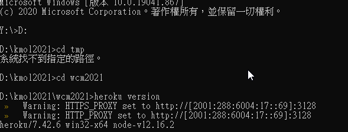
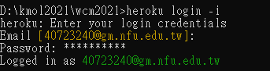
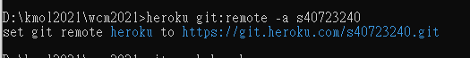
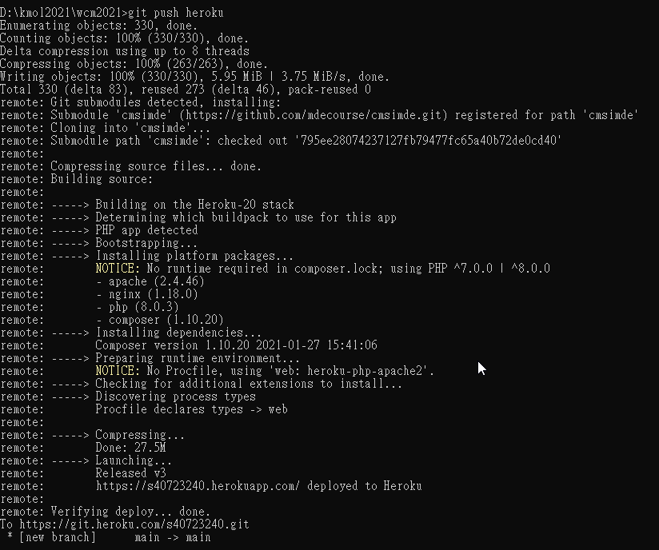

WEEK <<
Previous Next >> WEEK10-18
WEEK1-9
week1
敘述網際內容管理課程所需要的相關資料
(電腦輔助設計室第三磁區上課時使用純 IPv6 網路協定上線, 在 Python 3.8.5 可直接執行連結到 IPv4 網站的程式 (因為 Python 會自動使用 Windows 系統中所設定的 Proxy), 但在 Python 3.9.1 環境則必須明確宣告所使用的 IPv6 代理主機 (見以下註解說明, 因為至今 Python 3.9 仍無法如 3.8 自動透過 Windows 系統代理主機執行程式)
week2
說明kmolab基本概念
建立 kmol_hybrid 隨身程式系統
利用 https://github.com/mdecourse/cmstemplate 建立個人倉儲與網站
說明與 cmsimde 編輯及轉靜態網頁有關的認知
說明 topic0 執行動機以及自選組員後所衍生相關資料擷取問題的因應及處理
week3
敘述 cms.bat - 讓使用者執行動態網站用的批次檔案.
acp.bat - 若使用者已經將倉儲設為 ssh 連線, 且提供遠端與近端的認證模式, 則可以在執行此批次指令之後加上提交字串, 即可執行 git add ., git commit -m "提交訊息", 以及 git push 等三個指令.
week5
ssh執行
- 請登入 Github 並且選擇帳號右下方 Settings - SSH and GPG keys 備用
- 在 start_ipv6.bat 加入 set GIT_SSH=%Disk%:\putty\plink.exe
- 開啟 Putty 目錄中的 puttygen.exe, 以滑鼠點擊 Generate 後, 讓滑鼠在上方空白處隨意移動, 即可建立 key, 利用滑鼠選擇 key 區域中的文字資料, 並複製到 SciTE 編輯區, 存為 id_rsa 檔, 並將此內容貼至 Github SSH key 欄位中後儲存.
- 接下來在上一步驟中 puttygen.exe 視窗下方, 選擇 Save private key 後, 將 key 存為 my_key.ppk 或"學號.ppk"備用.
- 接下來則需要在 putty.exe 中建立一個 session, 用於以 ssh 協定連線到 github.com, 而 session 名稱可以自行命名, 但是必須與倉儲 .git 目錄中 config 的連線 url session 名稱對應.
- 當利用 putty.exe 設定連線 session 時必須注意是否使用 Proxy, 以及 SSH 中的 Auth 是否對應到前面所存檔的 .ppk private key 位置.
- 一旦 Github session 設定完成, 可以從 [HKEY_CURRENT_USER\SOFTWARE\SimonTatham] 將 registry 設定匯出存為 y:\my_github.reg, 並在 start_ipv6.bat 中以 regedit.exe /S y:\my_github.reg 將設定匯入.

week7
heroku實作
步驟一: (建立 Heroku 帳號) 進入 https://heroku.com, 建立帳號:s40723240,密碼設定必須要至少 8 個字元, 且字元中必須包含符號, 英文字母及數字, 並且登記後要進入 @gm 帳號進行確認後才能開通 Heroku 帳號.
Heroku 只允許免費建立五個應用程式, 且每個程式的最大容量為 500MB
步驟二: (建立 Heroku app) 登入 Heroku 後，建立s40723240 app，將可至 https://s40723240.herokuapp.com 連線取得網站最初內容.
步驟三: (下載 Heroku CLI) 從 http://a.kmol.info:88/heroku.7z 下載 Heroku cli 程式檔案, 解開至隨身碟 Y: 所在位置
步驟四: (修改命令搜尋路徑) 修改隨身系統的啟動批次檔案(ipv4 ipv6), 讓 Windows 的命令視窗中可以執行 heroku.exe
set Local=%Disk%\heroku
REM for heroku login
set HTTP_PROXY=http://[2001:288:6004:17::69]:3128
set HTTPS_PROXY=http://[2001:288:6004:17::69]:3128
set path_heroku=%Disk%:\heroku\bin;
重新啟動已經納入可執行 heroku.exe 的隨身碟 start_ipv6.bat 或 start_ipv4.bat
步驟五: (測試 heroku 執行) 測試是否能夠在修改後的命令列中執行 heroku.exe, 輸入 heroku version 若回應所使用的版本表示上述路徑設定已經成功.

步驟六: (設定 heroku 代理主機) git config --global http.proxy "http://[2001:288:6004:17::69]:3128" 進行設定.
步驟七: (設定同步倉儲) 針對利用 Heroku 同步 Github Pages 上的網站內容, 只需要透過 git remote add (Heroku 指令為 heroku git:remote -a heroku_倉儲_名稱, 之後只要在 heroku login 狀態下, 可以直接利用 git push) 在近端設定一個連線到 Heroku 倉儲的代號, 就能在每次更新 Github Pages 倉儲後, 再將內容同步至 Heroku. 網際內容管理課程將使用兩種 Heroku app 設定, 也就是靜態網頁與動態網頁:
靜態網頁 - 採用 php 方式部署, 讓 Heroku 將靜態網頁視為 PHP 程式, 利用 index.php 跳轉到 index.html
動態網頁 - 讓 Heroku 執行 cmsimde/wsgi.py 的方式進行雲端伺服.
步驟八: (以 git 進行提交推送)



WEEK <<
Previous Next >> WEEK10-18